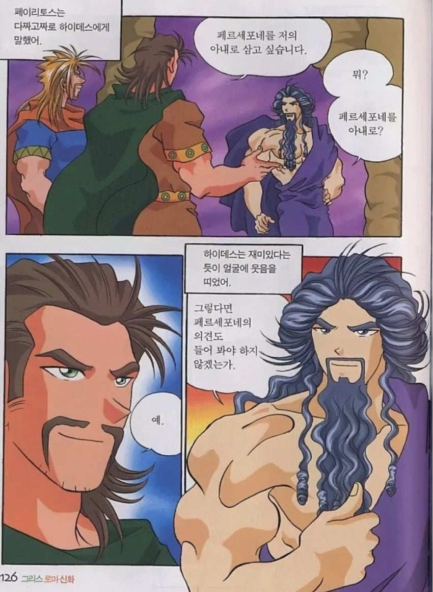

신, 그것도 삼주신 중 하나인 하데스 앞에서 '님 아내 데려갈거임.' 시전하는 페이리토스
저렇게 깝치다 테세우스랑 같이 생각의자에 앉게 되고 테세우스는 헤라클레스가 도와줘서 탈출하지만 페이리토스는 계속 남게 됨

신, 그것도 삼주신 중 하나인 하데스 앞에서 '님 아내 데려갈거임.' 시전하는 페이리토스
저렇게 깝치다 테세우스랑 같이 생각의자에 앉게 되고 테세우스는 헤라클레스가 도와줘서 탈출하지만 페이리토스는 계속 남게 됨
그 하데스마저 페르세포네랑 결혼하고싶어서 기습적으로 납치한건데 당당하게 결혼 하고싶다 박아버리면 뭐 답있나
신들 지가하면 트루러브지만 남이하면 불륜취급임
하데스 팔 보니 내일 점심은 수제비다
먼 패기냐
신 시험해보겠다고 아들 담궈서 먹인새끼가 아니라고?
그것도 그리스신중 최고의 순애보 앞에서 저 딴 대사를 날렸다고?
ㄹㅇ.. 어린이를 납치까지 할 정도로 사랑하는 남잔데
...? 어린이?
헤라클레스가 페이리토스를 구하지 못 한 이야기엔 두 종류가 있는데, 하나는 어째서인지 페이리토스는 테세우스와 다르게 헤라클레스가 온힘을 써도 의자에서 떼어낼 수 없어 포기했다는 것, 다른 하나는 헤라클레스가 페이리토스를 떼어내려고 하자 갑자기 지진이 일어나 땅이 갈라져서 놓쳐버렸다는 것. 둘 다 페이리토스의 죄가 더 무거워서 하데스가 놓아주지 않았다는 결론은 동일.
반대로 테세우스는 헤라클레스에게 순순히 구조받게 해준 건 얜 그냥 친구 잘못 사귀고 논 죄라 이 정도면 됐다 싶어 풀어준 듯?
테세우스가 저기 가기전 헬레네 납치했는데 지옥에서 갇혀있는동안 열받은 헬레네 오빠들이 아테네 침공해서 쑥대밭 만들고 엄마랑 여동생을 끌고가 노예로 만들었으며 돌아온 테세우스가 아테네에서 쫒겨난거 보면 지금 돌아가봤자 좋을 일 없다는 의도겠지
지옥(저승)의 신이 저새낀 돌아가면 더 고통스러운 지옥이겠구나 해서 보내준거군
뭐 신이니까 잠깐 가두면 저새끼 인생 조져서 떠돌이로 살다 객사할걸 알겠지
하데스 팔보니까 집에있는 개껌같네
??? : (내 살다살다 시발ㅋㅋㅋㅋ)
저러고나서 생각의자에서 테세우스 일어나다가 엉덩이살 뜯기지 않았었나
저놈의 그롬신이면 뭐지 신박한 개미새끼다 해봐라인거 같은디
심지어 페르세포네는 페이리토스의 큰고조할머니라는 거...
그리스 신화의 남자들 대부분은 생각을 어깨 위 대가리가 아니라 좃대가리로 하는 거 같음. ㅋㅋㅋㅋㅋ
애시당초 저긴 신들 조차 ㅈ대가리가 머가리를 대신하는 동네인데 그런 신들이 창조한 인간들이라면 당연할수도..ㅋㅋ
니는 의견 물어보고 데려갔냐 ㅋㅋㅋㅋㅋ
로뎅의 생각하는 의자인가 뭔가의 모델이냐
하데스 : 넌 반성의자가 필요하겠구나
후 오늘은 갓오워3다
제우스 ( 섹스의 신 )
아오 포티햄
테세우스랑 친구들은 헤라클레스를 보고 자란 세대라 하는 짓은 헤라클레스인데 몸은 아니었지